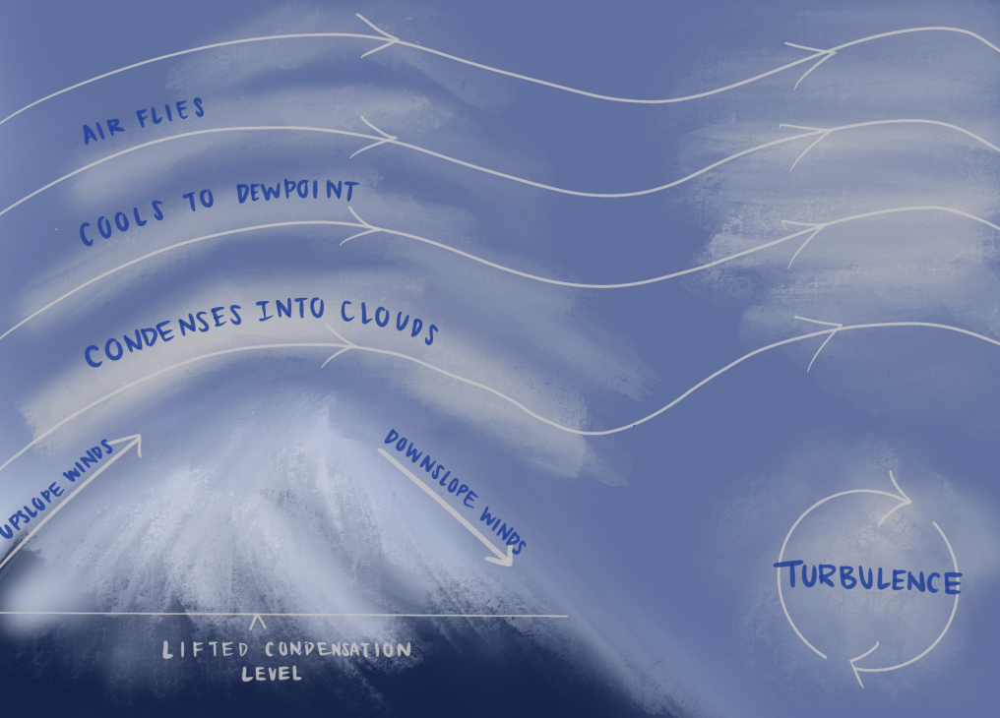
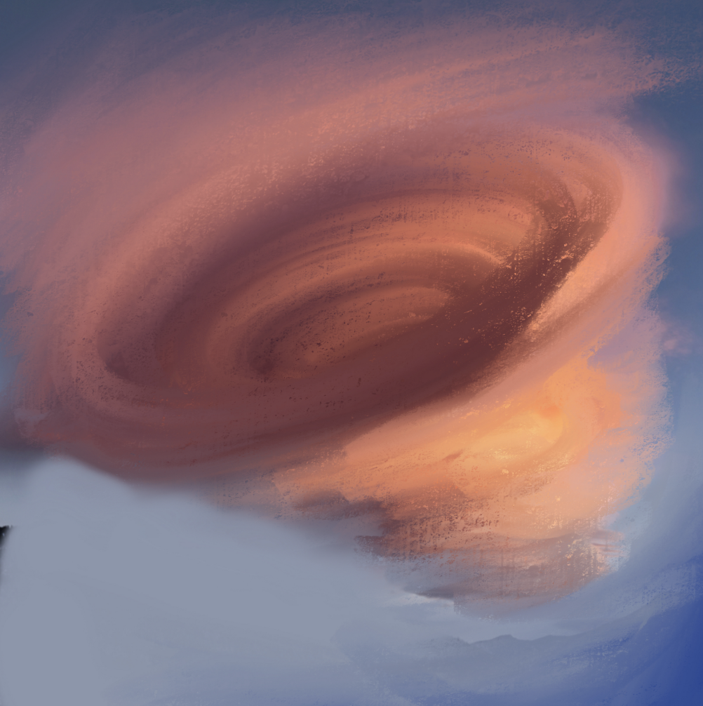
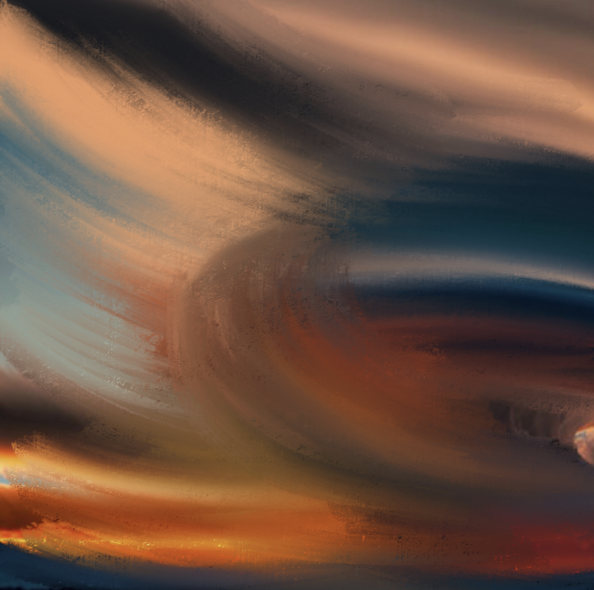
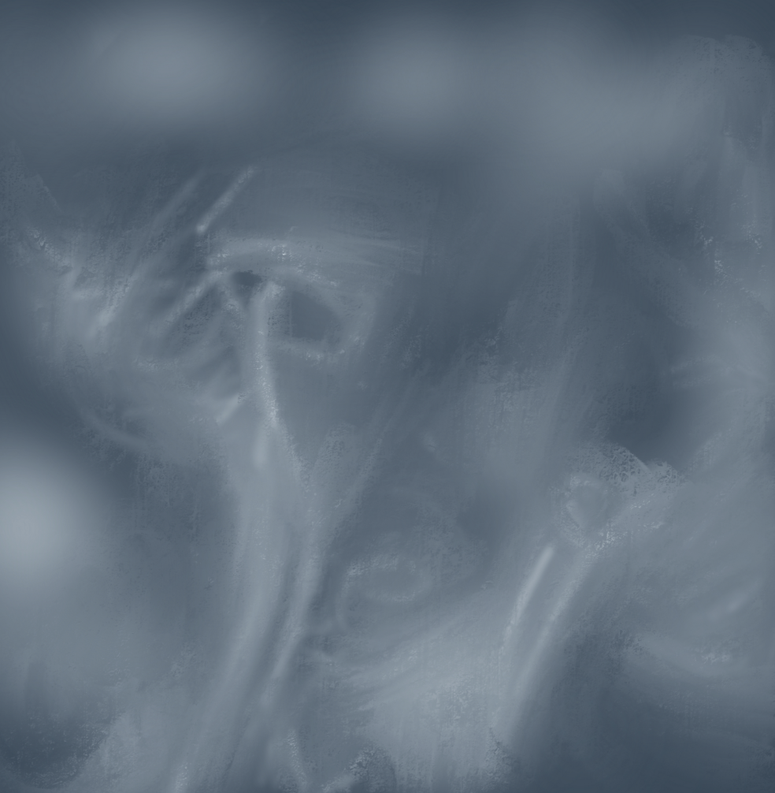
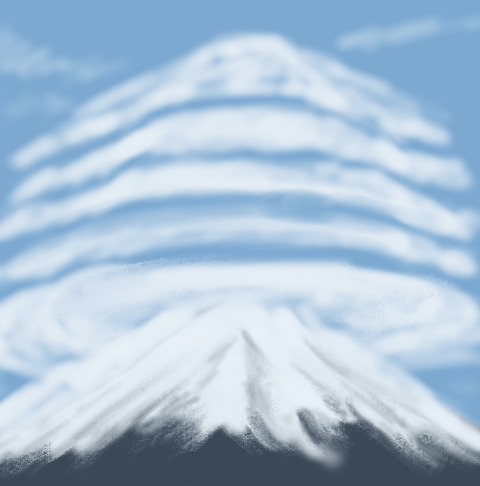

A collection of original designs that resemble
the phenomenon of a lenticular cloud. Handdrawn through procreate, each art piece
shows the different types of lenticular clouds and the formation.

Designs




Importance
It is important to recognize and appreciate natural phenomenons All images are handdrawn by the creator of this website, Rachel Chen.